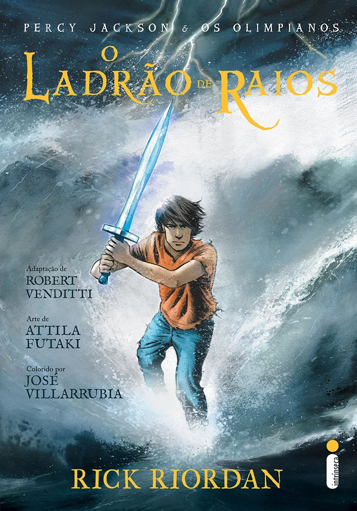

Estante de Livros
Sua biblioteca a 1 clique de distância.
Harry Poter e a Pedra Filosofal

Sinopse
Harry Potter nunca tinha ouvido falar em Hogwarts até o momento em que as CARTAS começam a aparecer no capacho do número 4 da rua dos Alfeneiros.
Endereçadas com um LACRE PÚRPURA, elas são repidamente confiscadas por seus tios TERRÍVEIS. E então, no décimo primeiro aniversário de Harry, um homem GIGANTESCO com olhos luzindo como besouros negros chamado RÚBEO HAGRID entra intempestivamente com uma notícia ASSOMBROSA: Harry Potter é um bruxo e tem uma vaga na ESCOLA DE MAGIA E BRUXARIA DE HOGWARTS. Uma aventura inacreditável está para começar!
Fonte: Google Books
| Data da primeira publicação |
Autor |
Idioma original |
Gêneros |
| 26 de junho de 1997 |
J.K. Rowling |
Inglês |
Romance, Lieratura infantil, Lieratura fantástica, Alta fantasia |
Sumário
O Senhor dos Anéis: A sociedade do anel

Sinopse
A Sociedade do Anel O volume inicial de O Senhor dos Anéis, lançado originalmente em julho de 1954, foi o primeiro grande épico de fantasia moderno, conquistando milhões de leitores e se tornando o padrão de referência para todas as outras obras do gênero até hoje. A imaginação prodigiosa de J.R.R. Tolkien e seu conhecimento profundo das antigas mitologias da Europa permitiram que ele criasse um universo tão complexo e convincente quanto o mundo real. A Sociedade do Anel começa no Condado, a região rural do oeste da Terra-média onde vivem os diminutos e pacatos hobbits. Bilbo Bolseiro, um dos raros aventureiros desse povo, cujas peripécias foram contadas em O Hobbit, resolve ir embora do Condado e deixa sua considerável herança nas mãos de seu jovem parente Frodo. O mais importante lega
Fonte: Google Books
| Data da primeira publicação |
Autor |
Idioma original |
Gêneros |
| 28 de julho de 1954 |
J.R.R. Tolkien |
Inglês |
Lieratura fantástica |
Sumário
Percy Jackson e o Ladrão de Raios

Sinopse
Primeiro volume da saga Percy Jackson e os olimpianos, O ladrão de raios esteve entre os primeiros lugares na lista das séries mais vendidas do The New York Times. O autor conjuga lendas da mitologia grega com aventuras no século XXI. Nelas, os deuses do Olimpo continuam vivos, ainda se apaixonam por mortais e geram filhos metade deuses, metade humanos, como os heróis da Grécia antiga. Marcados pelo destino, eles dificilmente passam da adolescência. Poucos conseguem descobrir sua identidade. O garoto-problema Percy Jackson é um deles. Tem experiências estranhas em que deuses e monstros mitológicos parecem saltar das páginas dos livros direto para a sua vida. Pior que isso: algumas dessas criaturas estão bastante irritadas. Um artefato precioso foi roubado do Monte Olimpo e Percy é o principal suspeito. Para restaurar a paz, ele e seus amigos – jovens heróis modernos – terão de fazer mais do que capturar o verdadeiro ladrão: precisam elucidar uma traição mais ameaçadora que fúria dos deuses.
Fonte: Google Books
| Data da primeira publicação: |
Autor |
Idioma original |
Gêneros |
| 28 de junho de 2005 |
Rick Riordan |
Inglês |
Mitologia grega, Romance, Ficção juvenil |
Sumário
Alice no País das Maravilhas

Sinopse
Há mais de 150 anos, a inocência e a curiosidade de uma pequena garota inglesa transformaram-se em um dos maiores clássicos da literatura infantojuvenil. Alice no País das Maravilhas conta a história de uma menina que, ao avistar um Coelho vestindo relógio e colete, sem hesitar, entra, às pressas, dentro do esconderijo do novo amigo. Ao cair na profunda toca, em seu trajeto pela terra das fantasias, Alice conhece o Chapeleiro Maluco, a Rainha de Copas, o Gato de Cheshire, a Lagarta e diversos outros personagens que lhe possibilitam viver experiências únicas que se confundem entre o real e o imaginário. Nesse universo, ao diminuir e aumentar de tamanho, a garota desenvolve o exercício da empatia, cria um grande laço de amizade com um personagem considerado louco, aprende a conviver com as diferenças, bem como a vencer os seus próprios medos ao enfrentar a Rainha de Copas. Com isso tudo, aprende grandes lições sobre a vida, o que torna a leitura do livro instigante. E ainda mais apaixonante, devido às múltiplas possibilidades de interpretação de cada uma das aventuras eternizadas por Alice.
Fonte: Google Books
| Data da primeira publicação: |
Autor |
Idioma original |
Gêneros |
| Novembro 1865 |
Lewis Carroll |
Inglês |
Literatura infantil, Literatura fantástica, Literatura monsense |
Sumário
O Guia do Mochileiro das Galáxias

Sinopse
Considerado um dos maiores clássicos da literatura de ficção científica, O Guia do Mochileiro das Galáxias vem encantando gerações de leitores ao redor do mundo com seu humor afiado.
Este é o primeiro título da famosa série escrita por Douglas Adams, que conta as aventuras espaciais do inglês Arthur Dent e de seu amigo Ford Prefect.
A dupla escapa da destruição da Terra pegando carona numa nave alienígena, graças aos conhecimentos de Prefect, um E.T. que vivia disfarçado de ator desempregado enquanto fazia pesquisa de campo para a nova edição do Guia do Mochileiro das Galáxias, o melhor guia de viagens interplanetário.
Mestre da sátira, Douglas Adams cria personagens inesquecíveis e situações mirabolantes para debochar da burocracia, dos políticos, da "alta cultura" e de diversas instituições atuais. Seu livro, que trata em última instância da busca do sentido da vida, não só diverte como também faz pensar.
Fonte: Google Books
| Data da primeira publicação: |
Autor |
Idioma original |
Gêneros |
| 12 de outubro de 1979 |
Douglas Adams |
Inglês |
Ficção científica, Romance, Humor, Ficção científica cômica |
Sumário